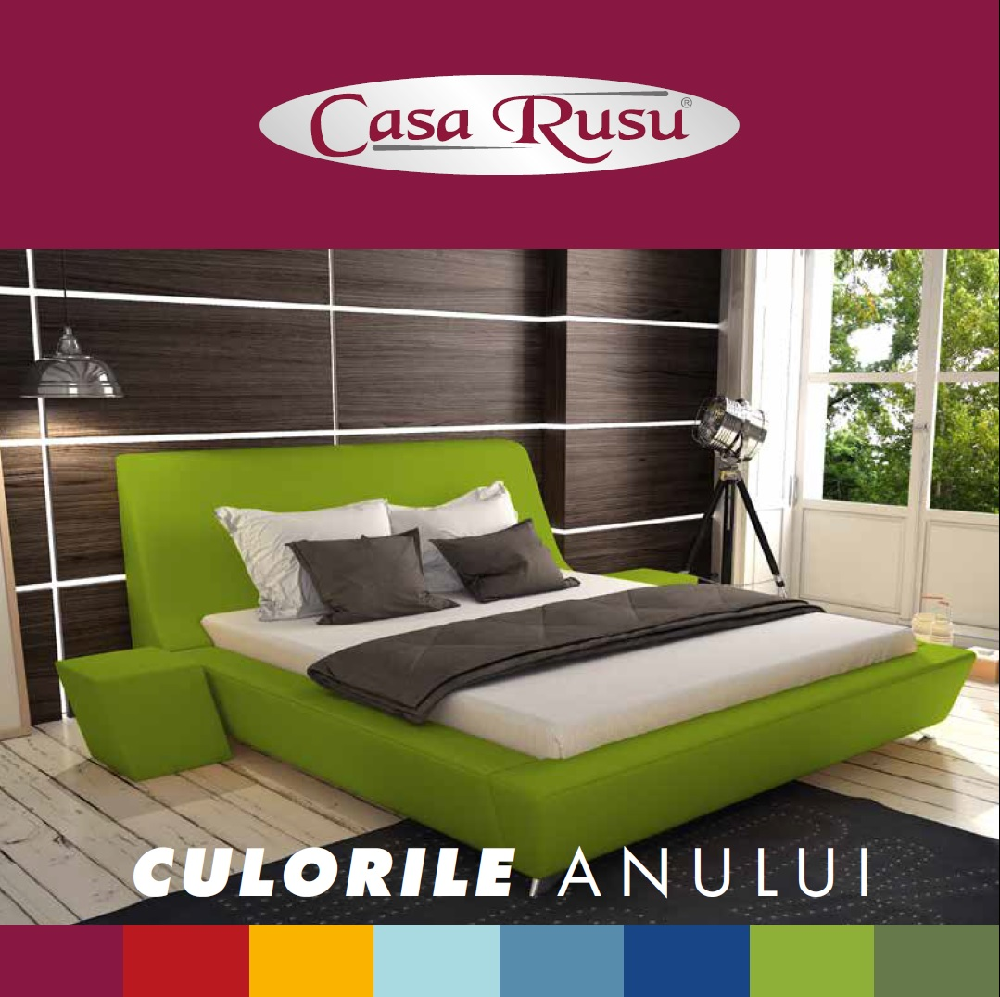

Paturi Futon Vs. Canapele 🔧🔧 Sfaturi Pentru Îmbunătățirea Locuinței. Asigurați-Vă Propriile Mâini - 2020
  Hai Să Fim Prieteni Gradinarit Cel Mai Popular În Secțiunea 3 Cele Mai Bune Utilizări Pentru O Mașină De Tuns Iarba Cu Bandă Gradinarit Cel Mai Popular În Secțiunea Depanarea Problemelor Comune De Tuns Iarba Cu Autopropulsie Casă interioară Cel Mai Popular În Secțiunea O Blat De Bucătărie Ceramică Este Rezistentă La Petele? Casă interioară Cel Mai Popular În Secțiunea Cum Să Înlocuiți O Ușă Interioară Decorarea Cel Mai Popular În Secțiunea Pro Și Contra Echipamentelor De Joacă Din Lemn Gradinarit Cel Mai Popular În Secțiunea Plantare Necorespunzătoare Pentru Grădinăritul Piciorului PătratPaturi Futon Vs. Canapele
Paturile și canapele extensibile sunt populare în camerele de cămin universitare și în pensiuni. Când spațiul este redus, acestea sunt perfecte, pentru că poți așeza patul după o noapte de somn bună. În unele cazuri, familiile își doresc un spațiu suplimentar pentru dormit în camera familiei sau mansardă, astfel încât rudele să poată rămâne atunci când sunt în oraș.
Aspect Confort și varietate Unii mai mulți factori Verdict
Paturi futon și canapea extensibilă sunt populare în camerele de cămin universitare și în casele de oaspeți. Când spațiul este redus, acestea sunt perfecte, pentru că poți așeza patul după o noapte de somn bună. În unele cazuri, familiile își doresc un spațiu suplimentar pentru dormit în camera familiei sau mansardă, astfel încât rudele să poată rămâne atunci când sunt în oraș. Există avantaje și dezavantaje atât la futon, cât și la canapea. Să ne uităm la binele și răul ambelor.
Aspect
Paturile futon sunt o piesă de mobilier destul de casual. Când o comparați cu canapeaua, uneori este mai puțin de dorit, deoarece canapeaua arată ca o canapea. Un futon oferă într-adevăr aspectul de informalitate. Motivul este că futonurile sunt, în general, asociate cu copiii de vârstă universitară și persoanele care închiriază primul apartament. Dacă puneți un futon în unele camere de zi, se pare că nu aparține acolo. Cu toate acestea, o canapea extensibilă se îmbină cu împrejurimile mai tradiționale. Canapeaua poate fi achiziționată pentru a se potrivi cu mobila actuală a camerei tale de zi. Acesta este un mod foarte clasic de a adăuga ceva spațiu de dormit în casa ta. Cu un futon, 1 lucru pozitiv este că aveți opțiunea de a-l acoperi cu o culoare nouă atunci când vă schimbați decorul.
Confort și varietate
Așeza pe paturi futon nu este la fel de confortabil ca să stai pe o canapea extensibilă. Salteaua este foarte plată și nu oferă prea mult sprijin. Acestea fiind spuse, este ferm. Dacă cineva îi place o saltea fermă, atunci va fi confortabil pe un futon. Canapeaua are o saltea mai moale. O canapea extensibilă poate avea arcuri în saltea, ceea ce îl poate face inconfortabil. Canapele extensibile, de obicei, au o dimensiune de 1, în timp ce futonurile au câteva opțiuni diferite. Puteți avea futone duble, duble, de dimensiune completă și chiar regine. Cu o canapea extensibilă, de obicei, acestea sunt duble. O dublă este cea mai bună pentru a se încadra sub canapea. Uneori, o dublă nu este suficient de mare. Este posibil să aveți toate dimensiunile diferite de oaspeți. O dublă este însă o dimensiune bună pentru o mulțime de oaspeți și poate dormi confortabil un cuplu. Dacă intenționați să vă folosiți mult din patul pe care îl alegeți, atunci poate doriți să mergeți cu futonul.
Unii mai mulți factori
Paturile futon sunt de obicei mai puțin costisitoare decât o canapea extensibilă. Canapele canapele pot costa sute de dolari, în funcție de ce fel obțineți. Un futon rulează în jur de 80 de dolari, sau puțin mai mult, în funcție de mărime. O altă parte în jos de o canapea extensibilă este că sunt greu de mișcat. Paturile canapele sunt de două ori mai grele decât o canapea obișnuită. Paturile futon sunt mai ușor de mutat și mai ușor de depozitat. Futonurile sunt, de asemenea, mai ușor de curățat decât o canapea extensibilă.
Verdict
Puteți lua o decizie bazată pe cea care vă satisface cel mai bine nevoile. Depinde într-adevăr în ce cameră adăugați un futon sau o canapea extensibilă, pentru a determina care va fi mai bine. Paturile futon sunt mai bune în costuri, dar canapeaua este mai bună la aspect.
Video Articole Pe Aceeași Temă: I letti a giorno IKEA.
Principal » Decorarea » Paturi Futon Vs. Canapele Articole Conexe Recomandate Sfaturi Pentru Proiectarea Planurilor De Case Curte 4 Pași Pentru A Face Tratamente Cu Geamuri Izolate Apartamente: Mărimi Tipice Pentru Unități În Los Angeles Conținut Nou Cum Să Atașați Perne De Balansoar Alegerea Celui Mai Bun Tip De Vopsea Pentru Garnitura Dvs. Din Lemn Tapițerie Curățare Uscată Vs. Curatare Cu Abur Articol Aleatoriu Scaune De ÎnlocuireScaunele de înlocuire sunt înlocuitori pentru orice număr de scaune dintr-un set de scaune. Veți avea nevoie de scaune de înlocuire dacă unul dintre mai multe scaune au fost deteriorate într-un fel, pentru a completa setul. Scaunele de schimb pot fi cumpărate de la același producător ca și scaunele din setul inițial. Cea mai bună practică atunci când cumpărați un set de bucătărie sau restaurant este să țineți evidența numerelor de marcă, nume și serie, astfel încât să fie ușor să găsiți scaune de înlocuire.
Articole De Expert Cum Să Faceți Un Tampon Pentru Scaune Cu Cravate Construirea Unui Cadru De Pat Trundle 3 Idei Originale De Colorat Pentru Ferestre Acasă Hardware și Instrumente Hardware și Instrumente Casă interioară P-MBuilders.com. 2012–2020. Toate Drepturile Rezervate.Copierea Și Citarea Este Permisă Numai Atunci Când Se Utilizează Un Link Activ La Acest Site.
Email: [email protected] | Harta Site-Ului